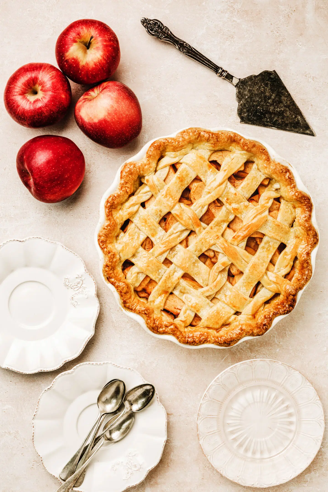

Apple Pie
Apple pie is a quintessential American dessert, renowned for its comforting flavors and classic presentation. It typically features a sweet filling made from sliced apples, sugar, cinnamon, and sometimes nutmeg or lemon juice, all nestled within a flaky, buttery crust. Apple pie can be prepared with either a single or double crust, with a lattice top being a popular choice for its decorative appeal.
